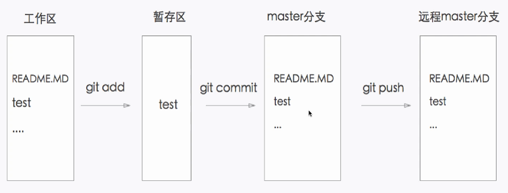

如果你有任何问题，可以发邮件到zrg1390556487@gmail.com。
Subversion
官网地址
http://subversion.apache.org/ https://tortoisesvn.net/
TortoiseSVN进行增量发布
1.右键》选择TortoiseSVN->Show Log（显示日志） 2.选中更新版本段》右键选择Compare revisions（版本比较） 3.全选》右键选择Export selection to…（导出所选文件到…）
关于GitHub
官网地址
https://github.com/
简单介绍
GitHub是一个利用Git进行版本控制、专门用于存放软件代码与内容的共享虚拟主机服务。它由GitHub公司（曾称Logical Awesome）的开发者Chris Wanstrath、PJ Hyett和Tom Preston-Werner使用Ruby on Rails编写而成。 GitHub同时提供付费账户和免费账户。
GitHub支持版本
下载 [[https://code.google.com/p/git-osx-installer/downloads/list?can=3][OSX 版]] 下载 [[https://git-for-windows.github.io/][git Windows 版]] 下载 [[http://book.git-scm.com/2_installing_git.html][git Linux 版]]
Git与SVN的区别
1.Git是分布式的，SVN不是； 2.Git把内容按元数据方式存储，而SVN是按文件； 3.Git分支与SVN的分支不同； 4.Git没有一个全局的版本号，而SVN有； 5.Git的内容完整性要优于SVN：Git内容存储使用的是SHA-1算法。。
基本概念
Repository(仓库)
用于存放项目源代码。
Star(收藏)
收藏项目
Fork(复制克隆项目)
Pull Request(发送请求)
基于Fork，修改或删除代码提交请求。
Watch(关注)
假设项目有任何更新，第一时间收到通知消息。
Issue(事务卡片)
发现了代码存在BUG，但是目前没有成型代码，需要讨论时使用。
使用GitHub
代码上传方式
SSH方式传输
使用SSH方式，在提交时，不需要输入用户名和密码。
1.首先在本地创建ssh key，一直回车。 $ ssh-keygen -t rsa -C "your_email@youremail.com" 成功的话会在~/目录下生成.ssh文件夹，进入.ssh目录，打开id_rsa.pub文件，复制里面的key。
2.进入github官网上，点击个人中心的 Account Settings（账户配置），左边选择"SSH Keys" > "Add SSH Key",title自定义填写， 然后将复制的key粘贴到GitHub的文本框中。下面是添加好的SSH Keys示例：
图：

3.验证是否成功: $ ssh -T git@github.com
HTTPS方式传输
使用条件：1）本地配置了global；2）需要输入用户名和密码推送代码
开源项目贡献流程
1.新建Issue：提交问题或建议或想法。 2.Pull Request：Fork项目，修改代码，发起修改请求。
安装与配置Git
安装git
安装命令
1.Ubuntu 10.10(maverick)或更新版本，Debian(squeeze)或更新版本： $ sudo aptitude install git $ sudo aptitude install git-doc git-svn git-email gitk 2.Ubuntu 10.04(lucid)或更老版本，Debian(lenny)或更老版本： $ sudo aptitude install git-core $ sudo aptitude install git-doc git-svn git-email gitk 3.RHEL、Fedora、CentOS: $ yum install git $ yum install git-svn git-email gitk
查看版本
$git --version
配置git
1.设置username和email，因为github每次commit都会记录他们。 $ git config --global user.name "your name" //配置用户名 $ git config --global user.email "your_email@youremail.com" //配置邮箱
-- 配置中文支持 //中文支持UTF-8： $ git config --global core.quotepath false //中文支持GBK： $ git config --global i18n.logOutputEncoding gbk //录入提交说明的字符集： $ git config --global i18n.commitEncoding gbk
2.查看配置信息 $ git config -l
3.删除配置 $ git config --unset --global user.name $ git config --unset --global user.email
开始使用Git
一些基本操作
创建新仓库
//仓库初始化：新建目录，进入，执行如下命令： $ git init
查看仓库状态
$git status
检出仓库
//本地仓库 $ git clone /path/to/repository
//远端仓库 $ git clone username@host:/path/to/repository $ git clone git@github.com:xxx/hello_world.git //GitHub
//获取最新仓库分支内容(update) $ git pull $ git pull orgion feature-A
删除文件
//1.删除文件 $ rm test.php //2.从Git仓库中删除文件 $ git rm test.php //3.提交 $ git commit -m "..." $ git push
提交过程操作
工作流
你的本地仓库由 git 维护的三棵“树”组成。第一个是你的 工作目录，它持有实际文； 第二个是 缓存区（Index），它像个缓存区域，临时保存你的改动； 最后是 HEAD，指向你最近一次提交后的结果。
图： 
图：

提交过程
1.添加：添加到缓存区 $ git add <filename> $ git add -A $ git add *
2.提交：实际提交改动 $ git commit -m "Description"
3.推送：提交到远端仓库 $ git push origin master //master为分支名称 如果你还没有克隆现有仓库，并欲将你的仓库连接到某个远程服务器，你可以使用如下命令添加： $ git remote add origin <server> //推送至远程仓库
更改提交的操作
//回溯历史版本 $ git reset --hard 哈希值
//冲突解决 在冲突发生时，往往需要删除其中之一。 $git fetch origin //获取 $git merge origin/master //合并
//修改提交信息 $ git commit --amend $ git log --graph //查看提交日志中的相应内容
//压缩历史提交 $ git rebase -i $ git rebase -i HEAD~2 //在历史记录中合并为一次完美的提交
配置免登录提交代码
$ vim .git/config
[remote "origin"] url=https://github.com/用户名/仓库名.git 修改为： [remote "origin"] url=https://用户名:密码@github.com/用户名/仓库名.git
分支
分支的创建
分支是用来将特性开发绝缘开来的。在你创建仓库的时候，master 是“默认的”。在其他分支上进行开发，完成后再将它们合并到主分支上。
图3：

//创建分支 $ git branch <BranchName> //创建分支并切换 $ git checkout -b <BranchName> //切换回主分支： $ git checkout master
//分支删掉： $ git branch -d <BranchName>
//显示分支 $git branch
//除非你将分支推送到远端仓库，不然该分支就是不为他人所见的： $ git push origin <branch>
更新与合并分支
要更新你的本地仓库至最新改动，执行： $ git pull
要合并其他分支到你的当前分支（例如 master），执行： $ git merge <branch>
在这两种情况下，git 都会尝试去自动合并改动。遗憾的是，这可能并非每次都成功，并可能出现冲突（conflicts）。这 时候就需要你修改这些文件来手动合并这些冲突（conflicts）。改完之后，你需要执行如下命令以将它们标记为合并成功： $ git add <filename> 在合并改动之前，你可以使用如下命令预览差异： $ git diff <source_branch> <target_branch>
标签
$ git tag //显示所有标签
为软件发布创建标签是推荐的。这个概念在SVN中也有。你可以执行如下命令创建一个叫做1.0.0的标签: $ git tag 1.0.0 1b2e1d63ff //1b2e1d63ff是你想要标记的提交 ID 的前 10 位字符。 $ git tag -a V0.1 -m "版本0.1"
$ git show V0.1//确认对应内容 可以使用下列命令获取提交 ID： $ git log
日志、差别对比
//查看提交日志 $git log //查看提交日志 $git reflog //查看所有操作日志 $git log -p README.md //显示文件的改动，不加具体文件可以查看全部文件的改动日志 $git log --pretty=short //查看第一行简述日志信息 $git log README.md //只显示指定文件的日志信息 $git log --graph //以图表形式输出分支提交日志
//查看更改前后的差别 $git diff $git diff HEAD //查看工作树和最新提交的差别
替换本地改动
假如你操作失误（当然，这最好永远不要发生），你可以使用如下命令替换掉本地改动： $ git checkout -- <filename> 此命令会使用 HEAD 中的最新内容替换掉你的工作目录中的文件。已添加到暂存区的改动以及新文件都不会受到影响。 假如你想丢弃你在本地的所有改动与提交，可以到服务器上获取最新的版本历史，并将你本地主分支指向它： $ git fetch origin $ git reset --hard origin/master
实用小贴士
//内建的图形化 git： $ gitk //彩色的 git 输出： $ git config color.ui true //显示历史记录时，每个提交的信息只显示一行： $ git config format.pretty oneline //交互式添加文件到暂存区： $ git add -i
“.gitignore” 文件
定义
Specifies intentionally untracked files to ignore
描述
Github Pages搭建网站
新建仓库搭建
1.创建个人站点，新建仓库。（注：仓库名必须为【用户名.github.io】） 2.在新建的仓库下，新建index.html文件即可。 注：(1)Github Pages仅支持静态网页;(2)仓库里面只能是.html文件
项目仓库下搭建
1.进入项目仓库主页，点击settings。 2.找到【Github Pages】，点击【Change theme】，选择主题来自动生成主题页面。 3.访问：https://用户名.github.io/仓库名
参考资料
Git分支：http://www.open-open.com/lib/view/open1328069889514.html https://git-scm.com/book/en/v2 《GitHub入门与实践》[日]大塚弘记 //书籍 https://github.com //GitHub官网 http://www.worldhello.net/gotgit/01-meet-git/050-install-on-windows-cygwin.html //Cygwin for Windows http://www.bootcss.com/p/git-guide/ http://www.oschina.net/news/12542/git-and-svn